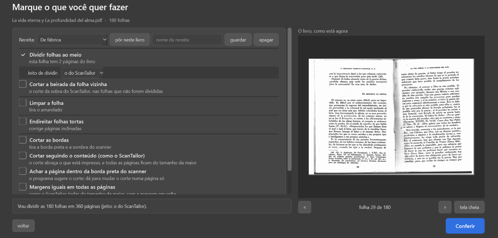
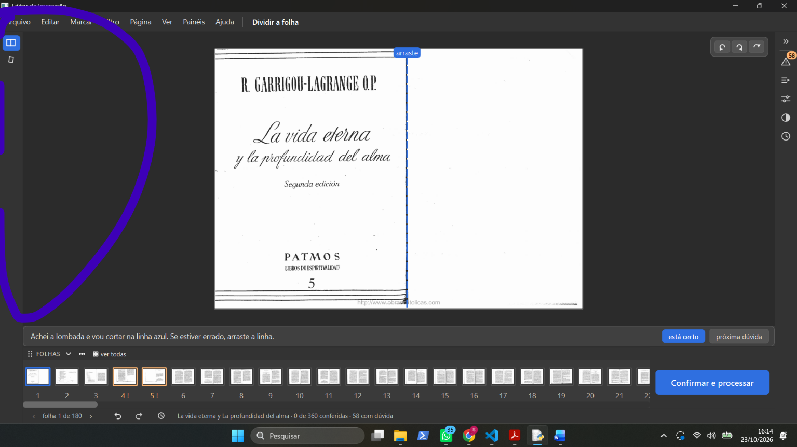
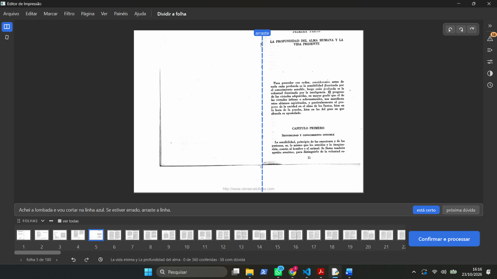
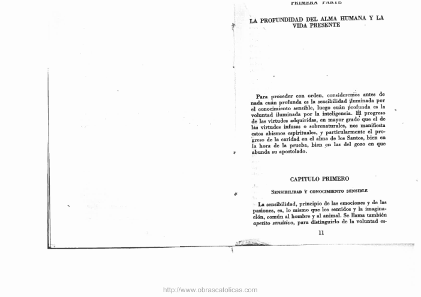
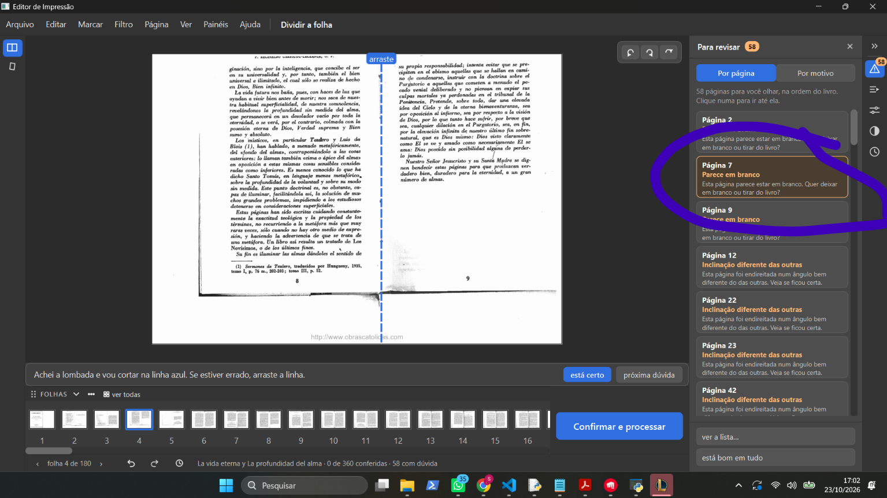
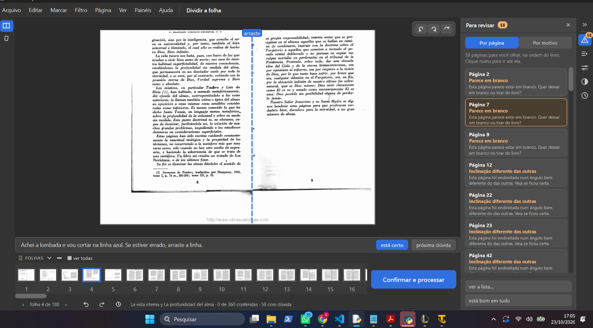

| 0-1 |
"Receita automática está muito confuso, esse painel" |
 |
confuso |
É a fila "Receita" da tela "Marque o que você quer fazer" (ui/tela_opcoes.py:197-223, core/perfis.py, item 2.19): guarda e repõe as escolhas desta tela, como os perfis do ScanTailor. Nada nela é automático. O código já diz "provisório até o layout". |
| 0-2 |
"Essa opção não dá para desativar" ("Escurecer sozinho a força do preto quando o texto sair falhado") |
 |
confuso |
Só vale com "Só as letras" ligado; sem ele fica cinza, mas continua marcado (de fábrica vem marcado) — parece "ligado e travado" (ui/tela_opcoes.py:544-553, :1039-1040). |
| 0-3 |
"clico no está certo e não acontece nada." (Dividir a folha, folha 1) |
 |
erro |
O clique grava a folha como conferida, mas nada na tela muda: a faixa repete a mesma frase, o rodapé conta páginas e não folhas, e não vai para a próxima (só a barra de espaço vai) (ui/tela_conferir.py:666-670, _marcar_revisada :5065-5070). |
| 0-4 |
"As opções do lado sumiram, era para aparecer né, elas somem conforme se escolhe opções quando se vai abrir o pdf a primeira vez?" |
 |
confuso + a investigar |
Os painéis (Para revisar, Automático, Propriedades, Filtro, Histórico) ficam na coluna de ícones da direita e começam fechados; a esquerda só tem as ferramentas, e as de etapas desmarcadas somem. Só dois ícones à esquerda não bate com as escolhas (Dividir + Limpar): investigar. |
| 0-5 |
"Olha o que o app fez com pdf jogou ele para cima, não faço a mínima ideia do porque." (folha 5) |
  |
não é do programa |
A tela "Dividir a folha" mostra o PDF como ele é, só girado (ui/tarefas.py:533-556, core/pdf_io.py:152-210). Provável: a folha já está assim no PDF. Conferido (23/10): o PDF original já tem a folha 5 assim (render direto com PyMuPDF, segunda imagem: "PRIMERA PARTE" cortado no alto). Arquivo: D:/Livros para editar/2 - TEOLOGIA/Escatologia/La vida eterna y La profundidad del alma.pdf. |
| 0-6 |
"não consegui nem achar o modo automatico." |
— |
confuso |
O Automático existe: é um dos painéis da coluna de ícones da direita da tela de conferir (PainelAutomatico, ui/widgets/paineis.py) e o botão "Rodar o automático..." da tela inicial (ui/tela_inicio.py:687). Nada na tela diz isso. |
| 0-7 |
"tem os avisos mas não tem como apertar para fazer ele sumir ou alguma sugestão de como se livrar dele." (painel Para revisar, cartões "Parece em branco" das páginas 2, 7 e 9; ele na folha 4, "Dividir a folha") |
 |
confuso (a conferir na sessão 1) |
O cartão do painel não tem botão: clicar nele leva até a página, e os botões do aviso ("Deixar em branco", "Tirar do livro", "está bom assim") aparecem na faixa embaixo da página (core/analise.py 140-152, ui/tela_conferir.py 500-510). No pé do painel há "está bom em tudo". Nada no cartão diz isso. Conferir na sessão 1 se os botões aparecem mesmo estando na ferramenta "Dividir a folha". |
| 0-8 |
(clicou no cartão "Página 7 — Parece em branco") |
 |
erro/confuso |
O clique levou à folha 4 (a página 7 é a metade da folha 4), mas a faixa continuou com "Achei a lombada..." e sem os botões do aviso: na ferramenta "Dividir a folha" os avisos de página não aparecem. Confirma o 0-7: não há como resolver o aviso dali. |
| 0-9 |
"tá, eu quero cortar as folhas e agora como eu faço??" |
|
confuso |
Ele só marcou "Dividir" e "Limpar a folha" na primeira tela, então a ferramenta de cortar não aparece na coluna da esquerda (por isso só dois ícones, achado 0-4). Para cortar, é preciso voltar em Arquivo > "Voltar para as opções" e marcar um dos cortes. Nada na tela diz isso. |